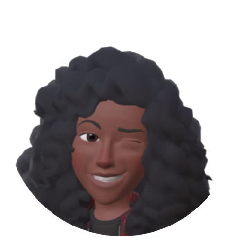

E aí! Que bom te ver por aqui. O que tá achando do site? Uma dica: Você sempre pode nos dar sua opinião enviando um e-mail pra ecoage@gmail.com ou direto pela página de dúvidas!
Ana Beatriz
Oi galera! Sou a Ana, estudo no Instituto Federal de São Paulo - Câmpus Araraquara.
Amo (inserir hobby) e (hobby). Fiz parte do desenvolvimento do site ecoage como Trabalho
de Conclusão de Curso.
Vocês podem conhecer mais sobre mim me seguindo nas redes sociais:


Eduardo
E aí, pessoal! Sou o Edu, estudo no Instituto Federal de São Paulo - Câmpus Araraquara.
Amo ler e escrever. Fiz parte do desenvolvimento do site ecoage como Trabalho
de Conclusão de Curso.
Vocês podem conhecer mais sobre mim me seguindo nas redes sociais:
Gabrielle
Oiii gentee! Sou a Gabi, estudo no Instituto Federal de São Paulo - Câmpus Araraquara.
Amo (inserir hobby) e (hobby). Fiz parte do desenvolvimento do site ecoage como Trabalho
de Conclusão de Curso.
Vocês podem conhecer mais sobre mim me seguindo nas redes sociais: